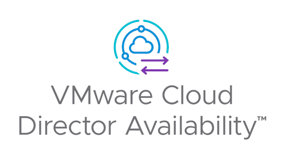

请访问原文链接：VMware Cloud Director Availability 4.7.5 - 灾难恢复和迁移 (DRaaS 解决方案) 查看最新版。原创作品，转载请保留出处。
作者主页：sysin.org
VMware Cloud Director Availability 4.7.5 | 20 APR 2026 | Build 25327470
VMware Cloud Director Availability 4.7.4 | 02 DEC 2025 | Build 25076082 (Product version: 4.7.4.3395977-305be35)
VMware Cloud Director Availability 4.7.3 | 18 SEP 2024 | Build 24280288 (Product version: 4.7.3.10534495-154c9f5866)
VMware Cloud Director Availability 4.7.2 | 04 JUL 2024 | Build 24058656 (Product version: 4.7.2.10056114-4ada44c9c3)
VMware Cloud Director Availability 4.7.1 | 15 FEB 2024 | Build 23265673 (Product version: 4.7.1.8968498-0422b55a9e)
VMware Cloud Director Availability 4.7 | 23 NOV 2023 | Build 22817906 (Product version: 4.7.0.8400987-96215f032c)
VMware Cloud Director Availability 4.6 | 15 JUN 2023 | Build 21891963 (Product version: 4.6.0.6869101-29b03ba46f)
VMware Cloud Director Availability 4.5 | 24 NOV 2022 | Build 20795276 (Product version: 4.5.0.5226630-ab9eb01ccb)
VMware Cloud Director Availability 4.4 | 23 JUN 2022 | Build 19925810 (Product version: 4.4.0.4187943-d9ddad1830)
VMware Cloud Director Availability™ 4.3 | 23 NOV 2021 | Build 18930473 (Product version: 4.3.0.3095245-9308521ec0)
VMware Cloud Director Availability™ 4.2 | 10 JUN 2021 | Build 18136536 (Product version: 4.2.0.2352022-853b942e14)
VMware Cloud Director Availability™ 4.1 | 26 NOV 2020 | Build 17222554 (Product version: 4.1.0.1660207-48e5972493)
VMware Cloud Director Availability™ 4.0 | 2 JUN 2020 | Build 16295568 (Product version: 4.0.0.4487-16295568)
概述
提供统一纳管、迁移和灾难恢复。
VMware Cloud Director Availability 是一款功能强大的解决方案，旨在“向”多租户 VMware 云环境或在这些云环境“之间”提供简单、安全且经济高效的纳管、迁移和灾难恢复服务。

优势
简单、经济高效的灾难恢复和迁移。
简单
实现基于熟悉工具而构建的一致管理功能，该管理方式综合了以前三个解决方案的功能：vCloud Availability for VMware Cloud Director 2.0、vCloud Availability Cloud-to-Cloud DR 1.5 和 VMware Cloud Director Extender 1.1。简单性则得益于现代化的 HTML-5 界面、与 VMware Cloud Director 的原生集成、新的快速设备部署模式以及面向租户和服务提供商的单个基于角色的访问控制 (RBAC) 门户。
经济高效
从基于订阅且价格具有竞争力的解决方案中受益，该解决方案设计的核心功能可最大限度降低成本，而紧密集成则可降低运维开销 (sysin)。通过源自 VMware vSphere Replication 的存储独立性、租户自助式保护、故障转移和故障恢复工作流以及基于虚拟机或 vApp 的精细控制，可提高灵活性并提供更具吸引力的经济效益。
集成
作为 VMware Cloud Provider 平台的一部分，VMware vCloud Availability 经过全新设计，极大地简化了云环境的纳管，实现了经济高效的可用性和恢复能力，并为云服务提供商及其终端客户提供安全运维。该解决方案与 VMware Cloud Director 紧密集成 (sysin)，可为基于 VMware Cloud Director 的云环境提供灾难恢复、纳管和迁移功能。
保护
由于具备 VMware 软件体系的内置安全性，包括对静态数据和动态数据的加密，因此用户可以自信地部署安全解决方案。此外，该解决方案还提供对复制流量的内置压缩以及端到端 TLS 加密。
服务
灾难恢复即服务（Disaster Recovery as a Service, DRaaS）：
在推广和销售灾难恢复解决方案时感到吃力？这套灾难恢复即服务工具包可以帮助您向客户传达业务连续性的真正价值。该工具包包含用于整个销售流程的教育内容、变现方法及可定制的材料，助您提升成交率，发展灾难恢复业务。
迁移服务（Migration Services）：
迁移是 VMware 提供的 DRaaS 功能中的一个子集。这种自助式的冷迁移或热迁移服务非常吸引那些希望轻松迁移至您云环境的客户。请结合灾难恢复工具包一同使用本工具包，因视频文件体积较大，二者被分开提供。
品牌重塑
自 2020 年 6 月起，vCloud Availability 更名为 VMware Cloud Director Availability。
下表列出了更改后的设备名称和服务名称：
| VMware vCloud Availability | VMware Cloud Director Availability | ||
|---|---|---|---|
| Previous Appliance Name | Previous Service Name | New Appliance Name | New Service Name |
| vCloud Availability Cloud Replicator Appliance | vCloud Availability Replicator | Cloud Replicator Appliance | Replicator Service |
| vCloud Availability Cloud Tunnel Appliance | vCloud Availability Tunnel | Cloud Tunnel Appliance | Tunnel Service |
| vCloud Availability On-Premises Appliance | VMware Cloud Director Availability On-Premises Appliance | ||
| vCloud Availability Replication Management Appliance | vCloud Availability vApp Replication Manager | Cloud Replication Management Appliance | Cloud Service |
| vCloud Availability Replication Manager | Manager Service |
新增功能
VMware Cloud Director Availability 4.7.5 | 2026 年 4 月 20 日 | Build 25327470
新增功能：
VMware Cloud Director Availability 4.7.5 包含重要的问题修复以及第三方库更新，这些更新提供了安全增强和错误修复。
- 此版本修正了一个适用于商业客户的许可证生成错误问题（KB437266）。
已解决的问题：
- 升级 VMware Cloud Director Availability 到 4.7.4 时失败，并显示错误 “A child process exited with code: 234.”
- 加载 Cold Migration Templates UI 失败，并显示错误 “An unexpected database error has occurred.”
- 在 OVA 部署的 “Review Details” 步骤中显示错误 “The certificate is expired”
- 生成支持包失败，并显示错误 “Operation cancelled due to an unexpected error.”
VMware Cloud Director Availability 4.7.4 | 02 DEC 2025 | Build 25076082 (Product version: 4.7.4.3395977-305be35)
VMware Cloud Director Availability 4.7.4 包含重要的问题修复，以及第三方库的更新，这些更新提供了安全性改进和错误修复。
VMware Cloud Director Availability 4.7.3 | 18 SEP 2024 | Build 24280288 (Product version: 4.7.3.10534495-154c9f5866)
VMware Cloud Director Availability 4.7.3 包含已解决的重要问题以及第三方库的更新，这些更新提供了安全修复。
- 新增对 VMware Cloud Director 10.6 的支持。
- 新增对 VMware vCenter 8.0 Update 3 的支持。
- 新增支持使用 VMware Live Recovery 许可证密钥进行产品激活。
VMware Cloud Director Availability 4.7.2 | 04 JUL 2024 | Build 24058656 (Product version: 4.7.2.10056114-4ada44c9c3)
VMware Cloud Director Availability 4.7.2 包括已解决的重要问题和提供安全修复的第三方库的更新。
- 添加了对启用了 vTPM 的虚拟机保护和迁移的支持，并且对连接的存储磁盘进行完全、部分或不加密。
- 添加了对未加密 VM 进行加密的支持，作为保护或迁移过程的一部分。
- 添加了对使用混合加密功能的存储策略的保护或迁移过程的支持。
VMware Cloud Director Availability 4.7.1 | 15 FEB 2024 | Build 23265673 (Product version: 4.7.1.8968498-0422b55a9e)
VMware Cloud Director Availability 4.7.1 包括已解决的重要问题和提供安全修复的第三方库的更新。
VMware Cloud Director Availability 4.7 | 23 NOV 2023 | Build 22817906 (Product version: 4.7.0.8400987-96215f032c)
VMware Cloud Director Availability 4.7 支持以下新功能：
工作负载恢复期间的存储策略重新分配 - 现在您可以激活“更改存储布局”，然后选择与现有复制中所选数据存储不同的数据存储，从而在执行的故障转移或迁移操作完成后移动数据。所有磁盘和 vmdk 文件都会移动到新选择的存储。例如，租户最初可以将副本文件发送到更便宜且速度较慢的存储，在其中构建 vmdk，然后一旦故障转移，工作负载就会转移到昂贵且快速的存储。
安全标记 - 现在，NSX 安全标记可以在运行 VMware Cloud Director 10.3 及更高版本和 VMware Cloud Director Availability 4.7 的云站点之间复制。安全标记在虚拟机、vApp 和 vApp 模板复制的恢复期间应用。
预选 VDC VM 策略 - 现在，当创建到 Cloud Director 站点作为目标的复制时，当同名的 VM 放置或 VM 大小策略已应用于源工作负载时，匹配的 VDC 策略将被预选，允许更快地完成新的复制向导。
恢复计划运行状况验证 - 现在，创建恢复计划后，在“运行状况”选项卡上，您可以看到基础设施的验证以及计划中复制的数据，以检查计划执行是否可能在某些步骤上失败。当观察到的问题无法阻止恢复过程时，验证可以显示警告，或者当问题阻止恢复过程时（例如，当禁用目标存储策略时），验证可以显示错误。
灵活的存储配置文件分配 - 现在允许将一台虚拟机复制到多个数据存储。例如，将其磁盘之一放置在单独的数据存储上 (sysin)，或者从 .vmx 文件中拆分一些磁盘。
配对站点过滤 - 现在，提供商可以隐藏某些组织的一些对等站点，以防止每个租户为了方便而看到所有配对站点。受限租户可以继续管理现有传入复制，但无法启动新复制，因为源站点不可见，并且无法看到传出复制（因为它们已按站点筛选）。
Cloud Director 身份验证模型合规性 - 现在为 VMware Cloud Director 可用性做好准备，以便将来在 VMware Cloud Director 中弃用本地用户。
API 令牌配对 - 现在还支持使用一次性访问令牌将本地站点与 Cloud Director 站点配对，请参阅 “从 VMware Cloud Director 生成 API 访问令牌”。
用于 Cloud Director 复制的复制跟踪虚拟机 (RT VM) 放置解决方案 - 现在取代了独立磁盘，并代表用于复制放置的影子 VM，以允许按磁盘放置。提供商还可以为现有 vApp 和 VM 复制配置复制跟踪 (sysin)。通过目标站点中受支持的 VMware Cloud Director 版本，RT VM 取代了独立磁盘作为放置和报告解决方案，并允许按磁盘存储配置文件。
vSphere DR 和迁移的种子 - 现在还可以使用种子虚拟机在 vCenter 站点之间进行复制。
停用对本地的保护 - 现在，保护允许对允许的目标站点进行更精细的控制，将本地与云站点分开，类似于分别控制本地和云目标的迁移。
我的首选项 - 现在允许每个用户选择其界面的语言、深色、浅色或高对比度主题，并选择行数以及所选行是否跟随单击的行。
下载地址
VMware Cloud Director Availability™ 4.0 Provider Appliance & On-premises Appliance：
百度网盘链接：https://pan.baidu.com/s/1EeNVIXoBgLfEEnt1sBDO3Q?pwd=joam
VMware Cloud Director Availability™ 4.1 On-premises Appliance：
百度网盘链接：[EoD]
VMware Cloud Director Availability™ 4.2 On-premises Appliance：
百度网盘链接：[EoD]
VMware Cloud Director Availability™ 4.3 Provider Appliance & On-premises Appliance：
百度网盘链接：[EoD]
VMware Cloud Director Availability 4.4 On-premises Appliance：
百度网盘链接：[EoD]
VMware Cloud Director Availability 4.5 On-premises Appliance：
百度网盘链接：[EoD]
VMware Cloud Director Availability 4.6 On-premises Appliance：
百度网盘链接：https://pan.baidu.com/s/1Rf0I9qevzdeGCOgu1mh6dw?pwd=cb60
VMware Cloud Director Availability 4.7 On-premises Appliance：
百度网盘链接：https://pan.baidu.com/s/1b1G7JmbmznUSBtzWf49NcQ?pwd=q44u
VMware Cloud Director Availability 4.7.1 On-premises Appliance：
百度网盘链接：https://pan.baidu.com/s/1hREWHq-4UN75pKJGYzViRg?pwd=wbpz
VMware Cloud Director Availability 4.7.2 On-premises Appliance：
百度网盘链接：https://pan.baidu.com/s/1k56S5oUhZSnN2AzAJ0psUQ?pwd=j38j
VMware Cloud Director Availability 4.7.3 Provider Appliance & On-premises Appliance：
百度网盘链接：https://pan.baidu.com/s/16ULhktdZEeEjD5H3P0DFjQ?pwd=x47c
VMware Cloud Director Availability 4.7.3 On-premises Appliance
Name: VMware-Cloud-Director-Availability-On-Premises-4.7.3.10534495-154c9f5866_OVF10.ova
File size: 476.47 MB
Last updated: Sep 16, 2024 12.52AMVMware Cloud Director Availability 4.7.3 Upgrade Disk Image
Name: VMware-Cloud-Director-Availability-4.7.3.10534495-154c9f5866.iso
File size: 353.47 MB
Last updated: Sep 15, 2024 11.23PMVMware Cloud Director Availability 4.7.3 Provider Appliance (
Non-public sharing)
Name: VMware-Cloud-Director-Availability-Provider-4.7.3.10534495-154c9f5866.ova
File size: 476.47 MB
Last updated: Sep 15, 2024 11.23PM
VMware Cloud Director Availability 4.7.4 Provider Appliance & On-premises Appliance：
百度网盘链接：https://pan.baidu.com/s/10WUhr4pwobTJ2bOUMz8JmQ?pwd=e7ff
VMware Cloud Director Availability 4.7.4 On-premises Appliance
Name: VMware-Cloud-Director-Availability-On-Premises-4.7.4.3395977-305be35_OVF10.ova
File size: 478.88 MB
Last updated: Dec 02, 2025VMware Cloud Director Availability 4.7.4 Upgrade Disk Image
Name: VMware-Cloud-Director-Availability-4.7.4.3395977-305be35.iso
File size: 364.01 MB
Last updated: Dec 02, 2025VMware Cloud Director Availability 4.7.4 Provider Appliance (
Non-public sharing)
Name: VMware-Cloud-Director-Availability-Provider-4.7.4.3395977-305be35.ova
File size: 478.88 MB
Last updated: Dec 02, 2025
VMware Cloud Director Availability 4.7.5 Provider Appliance & On-premises Appliance：
- Download is currently unavailable.

文章用于推荐和分享优秀的软件产品及其相关技术，所有软件默认提供官方原版（免费版或试用版），免费分享。对于部分产品笔者加入了自己的理解和分析，方便学习和研究使用。任何内容若侵犯了您的版权，请联系作者删除。如果您喜欢这篇文章或者觉得它对您有所帮助，或者发现有不当之处，欢迎您发表评论，也欢迎您分享这个网站，或者赞赏一下作者，谢谢！
 支付宝赞赏
支付宝赞赏  微信赞赏
微信赞赏赞赏一下
敬请注册！点击 “登录” - “用户注册”（已知不支持 21.cn/189.cn 邮箱）。 请勿使用联合登录（已关闭）。